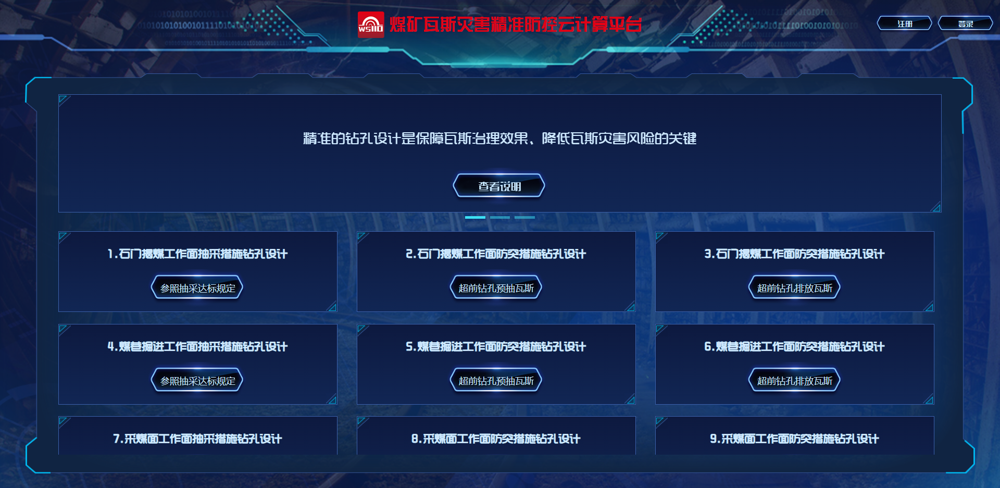
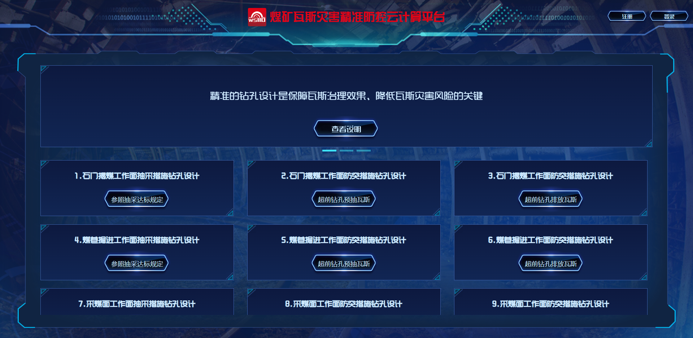

WS110是一款集钻孔自动设计、三维成像、文档生成等功能于一体的煤矿瓦斯钻孔智能设计三维成像云平台系统。
WS110运用拓扑数学分析方法，结合计算机云平台的弹性运算能力，针对不同矿区典型矿井石门揭煤、抽采达标、底板穿层、煤巷掘进等常规瓦斯抽放措施的钻孔设计，利用云服务器的高速运算和大数据处理能力，实现在非人为干预下计算机自动设计钻孔，保证钻孔工程量最低，并进行设计结果自动检查和三维可视化图像呈现，确保设计结果的可靠性和透明度。

WS110运用拓扑数学分析方法，结合计算机云平台的弹性运算能力，针对不同矿区典型矿井石门揭煤、抽采达标、底板穿层、煤巷掘进等常规瓦斯抽放措施的钻孔设计，利用云服务器的高速运算和大数据处理能力，实现在非人为干预下计算机自动设计钻孔，保证钻孔工程量最低，并进行设计结果自动检查和三维可视化图像呈现，确保设计结果的可靠性和透明度。
